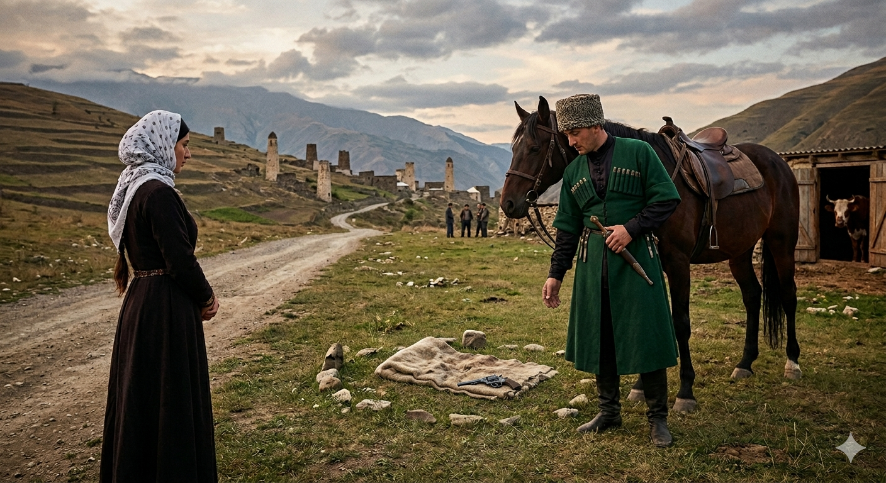

И.А. Дахкильгов. Хьехаме дувцарш - поучительные рассказы-притчи.
И.А. Дахкильгов. Хьехаме дувцарш - поучительные рассказы-притчи. Из ингушского фольклора.

Эздел лархӀар
Ди хехкка наькъагӀа водаш хиннав говрабаьри. Гаьннара ейнай цунна духьала йоагӀа бер кара а долаш цхьа кхалсаг. Цунна а ванав гаьннара хьатӀавоагӀа из баьре. Сихха наькъах дӀаюстар яьнна, баь тӀа из бер Ӏо а дила, юха а наькъ йисте а яьнна, оагӀора йийрза, дӀаэттий из. Деррига зувш хиннав говрабаьри. Хехкка хьатӀаотташехьа дин тӀара а весса, бера дӀатӀавахав из. Хьалъэйдаь хьежав из цунга. Хоза кӀаьнк хиннав. Из Ӏо а вила, хьаяьккха ший ворхӀаза ювла тепча кӀаьнка юхе Ӏойиллай цо. Ловца а баьккха, шийца эздел лаьцача кхалсага баркал а аьнна, ваьнна дӀавахав. Ший доттагӀех кхийттача, из деррига дӀадийцад баьречо. Цу кхалсага хоза эздел хилар бахьан долаш еннаяр ше из тепча а аьннад. Цхьан къонахчо хаьттад: - Из йиӀиг яларе, фу дергдар Ӏа? - Хьай, сай даьсара, кхо ца беш, кхий чура хьаара а баьккха, етт-м лургбар, - жоп деннад вокхо, - сел эхь-эздел долаш из кхалсаг хилар бахьан долаш цун сий а деш.
РУССКИЙ
Уважение к благородству
Мчался по дороге всадник. Издали увидел он идущую навстречу женщину с ребенком. Она тоже заметила всадника. Женщина быстро сошла с дороги, невдалеке положила ребенка на траву, вернулась на дорогу и стала боком к приближающемуся всаднику. Подскакал он, соскочил с коня и подошел к ребенку. Высоко поднял он его. Это был красивый мальчик. Всадник положил его на место, достал свой семизарядный пистолет и положил его рядом с мальчиком. Произнес он пожелания ребенку, поблагодарил женщину за проявленную почтительность и ускакал далее. Встретившись с друзьями, всадник обо всем рассказал им. И добавил: "Я дал мальчику пистолет потому, что его мать оказалась весьма благородной женщиной". Один из друзей спросил: - А если бы ребенок был бы не мальчиком, а девочкой, что бы ты тогда сделал? - Клянусь, вывел бы из сарая свою корову и без сожаления отдал бы девочке в честь того, что ее мать такая благородная и почтительная женщина, - ответил он.
ENGLISH
Respect for nobility
A horseman was galloping along the road. From a distance, he saw a woman walking towards him with a child. She, too, spotted the horseman. The woman quickly stepped off the road, laid the child down on the grass a short distance away, returned to the road and stood with her side to the approaching horseman. He rode up, dismounted and approached the child. He lifted him high into the air. It was a handsome boy. The horseman set him back down, took out his seven-shot pistol and placed it beside the boy. He offered his best wishes to the child, thanked the woman for her courtesy and rode on. When he met up with his friends, the horseman told them everything. He added: 'I gave the boy the pistol because his mother turned out to be a very noble woman.' One of his friends asked: 'And if the child had been a girl rather than a boy, what would you have done then?' 'I swear, I would have led my cow out of the barn and given it to the girl without a second thought, in honour of the fact that her mother is such a noble and respectful woman,' he replied.
НОХЧИЙН
Оьздангаллах сий деш хилар
Некъа тӀехула йоргӀаш баьхьара баьр. Генна цунна дуьхьал гуш дели, бер юкъа лаьцна долу зуда. Изза баьрна дуьхьал гарх бевзи. Зуда некъа тӀера сихонца дӀаяьлла, гена ца яьлла бер буц тӀе диллира, тӀаккха некъа тӀе юха а йели, баьр тӀаваьллачу метте ша оагӀарчул хӀоьттина. Кхаьчна баьр, говрара охьавала, бер тӀе кхаьчна. Лакха дӀа а ловзийна цо. Хаза кӀант хилла. БаьрӀо и лаьтта тӀе дита, шен ворхӀ пхо йолу тапча схьа а даьккхина, кӀанта уллохь а диллина. Аьлла цо кӀантана дика лаьар дешнаш, зудчун деш йолу дозаллех баркал а ъулла, дехьадаьлла иза. ДоттагӀашка кхаьчначохь, баьро дерриге а царна дийцина. ТӀетӀа а аьлла: «Ас кӀантана тапча делла, хӀунда аьлча цуьнан нана чӀогӀа оьзда зуда карайна». ДоттагӀех цхьаьннан хаьттина: - Ткъа бер кӀант доцуш йоӀ хиллехь, хӀун дийр дар ахьа? - Дуй ду, ас цунна сарайра шен Ӏатт схьа а даьккхина, доцца ойла ца еш, йоӀана делла хургдар, цуьнан нана иштта оьзда, эздий зуда хиларна, - жоп делла цо.
ПОГОВОРКИ
Га дика я, сом латаш яле; саг дика ва, гӀуллакхаца вале. Дерево хорошо плодами, а человек – делами. A tree is good for its fruit; a person is good for their deeds. Дитт дика ду, стом латош хилча; стаг дика ву, гӀиллакхца велахь.Дика дин йоргӀах бовз, эзди саг гӀулакхах вовз. Хороший конь узнается по иноходи, благородный человек – по делам. A good horse is known by its gait; a noble person is known by their deeds. Дика дин йоргӀах бевза, оьзда стаг гӀуллакхах вевза.Дошои дотои дохкаш-эцаш да, гӀулакх-эздел е дохкаш а е эцаш а дац. Золото и серебро покупаются и продаются, благородство и воспитанность (этикет) не продаются и не покупаются. Gold and silver can be bought and sold; nobility and good manners cannot. Деший детий духкуш-оьцуш ду, гӀиллакх-оьздангалла йа духкуш а йа оьцуш а дац.Сага хозал – дика оамал. Красота человека – хороший характер. A person's true beauty is a good character. Стеган хазалла - дика амал.Хозача гӀулакхал дезагӀа хӀама дац. Нет ничего дороже красивых (благородных) дел. There is nothing dearer than a noble deed. Хазачу гӀиллакхал дезах хӀумма а дац.Хозача дешо лакха лоам бошабаьб. Красивое слово и снежную гору растопит. A kind word can melt even a mountain of snow. Хазачу дашо лекха лам башийна.Хургдола оалхазар бӀена чура Ӏах (кхайк). Будущая мощная птица еще птенчиком по крику узнается. A mighty bird to come is already known by its cry while still a nestling. Хирдолу олхазар бен чуьра Ӏеха (кхойкху).Хьаькъалга, эзделага хьежжа нахана везаргва хьо. Люди будут ценить тебя по уму и благородству. People will value you by your wisdom and nobility. Хьекъале, оьздангалле хьаьжжина нахана везар ву хьо.Эздело аьннад: “Эхь долча со короргда шоана!”. Благородство сказало: “Вы найдете меня там, где есть стыд и совесть!”. Nobility said: "You will find me where there is shame and conscience." Оьздангалла аьлла: "Эхь долчехь со карор ду шуна!"Эздеча сага тӀа гали а тов. На благородном и мешковина хорошо смотрится. On a noble person, even sackcloth looks fine. Оьздачу стеган тӀехь гали а тов.Эздеча саго цхьан дикаца шийх даьнна ийс гӀалат тоадаьд, воацачо – ийссе дика толхадаьд. Благородный человек девять своих дурных поступков исправляет одним благородным; неблагородный – одним дурным поступком перечеркивает девять своих хороших дел. A noble person erases nine of their faults with one good deed; an ignoble one cancels out nine good deeds with a single bad one. Оьздачу стага цхьан диканца шех даьлла исс гӀалат тодина, воцучо - иссе дика талхийна.Эзди воацачунца леладе эздел, - цундухьа а доацаш хьайдухьа леладе. Веди себя благородно и с неблагородным – не ради него, а ради себя. Behave nobly even toward one who is not noble — not for their sake, but for your own. Оьзда воцучуьнца лелайе оьздангалла, - цун дуьхьа а доцуш хьан дуьхьа леладе.